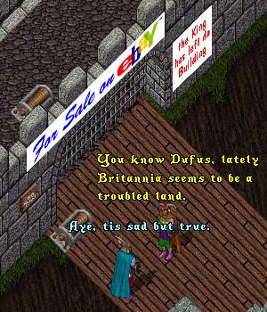
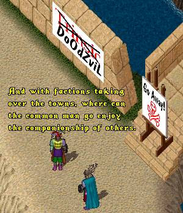
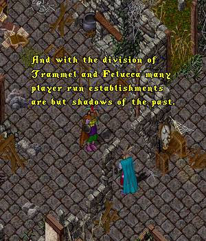
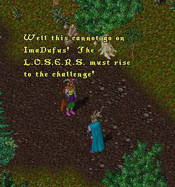
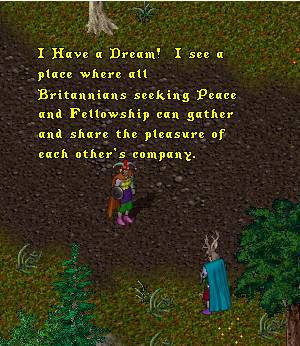
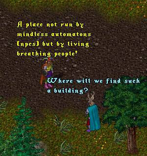
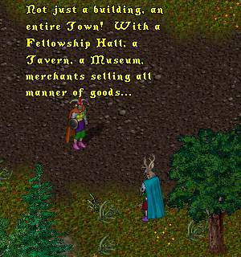
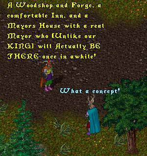
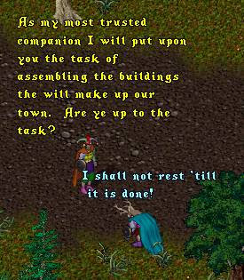
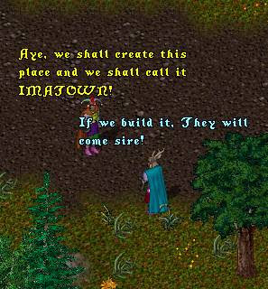

Episode 118: We Built this City - This week I take a slight departure from the regular 'toons and combine this episode with an announcement. Ever since the house placement madness on Trammel, the L.O.S.E.R.S. have been working day and night to put together what we hope will become a center for player-run fun and fellowship on Trammel. The housing stampede made it next to impossible for groups to put together an assembly of buildings large enough to call themselves a town but ImaNewbie and the L.O.S.E.R.S have risen to the challenge. It's not quite ready to launch this weekend but all the buildings are in place, we are decorating like mad, and with any luck next weekend we should be able to formally announce and open the first major player run town on Pacific, Trammel. What did we call it? ImaTown! (what else?) Check out the latest 'toon then read on for more details.









